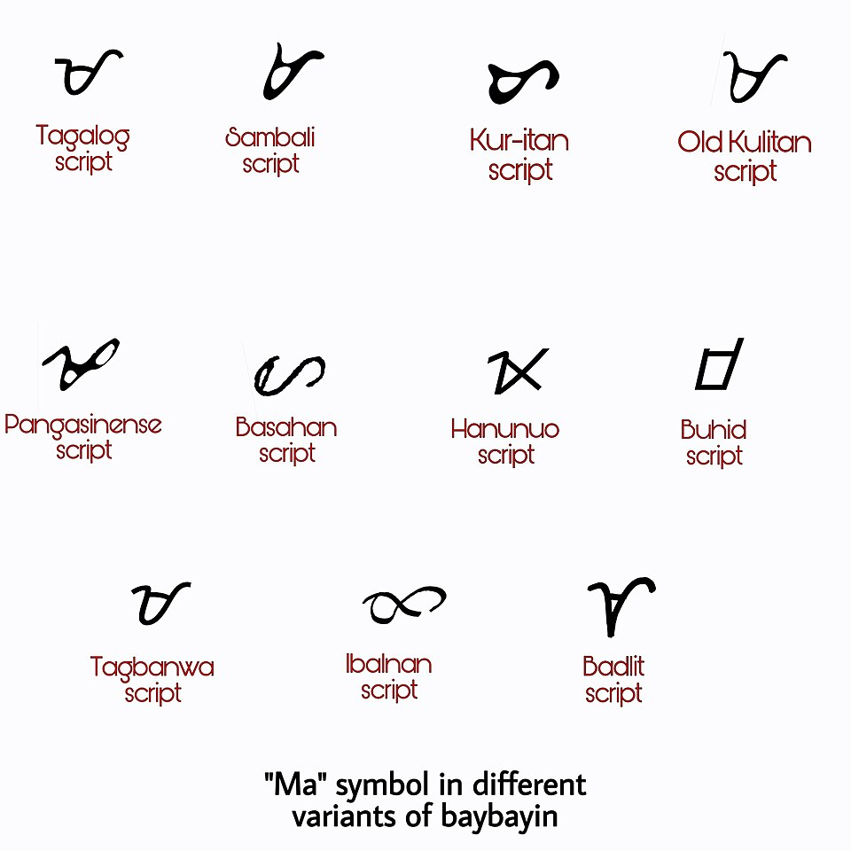

Eleven Ma

“Ma symbol baybayin.jpg,” Wikimedia Commons, uploaded 2020-04-28 by Zzardie06 as own work, public domain. Shown at 960 px.
One syllable, ma, in eleven hands. Tagalog, Tagbanwa and Old Kulitan are nearly the same loop with a stroke through it. Ibalnan is a figure eight on its side. Buhid is a box with one side open and slanted. Hanunuo is a cross. Basahan could be a letter s that fell over. Badlit looks like a bird’s foot. Most of them are one stroke you could draw without lifting the pen; Hanunuo and Buhid are straight-edged where the rest curve, and the labels are set in a rounded modern sans that has nothing to do with any of them.
The sheet is one person’s chart. I have no way here to say whether these are the traditional forms, a modern reconstruction, or the maker’s redraw; the file’s description says only “different ‘Ma’ symbol or character of Baybayin scripts.” The three Tagalog-family glyphs differ by a hair, which is what a redraw would do and also what a family does. That is a look, not a finding.
← a7